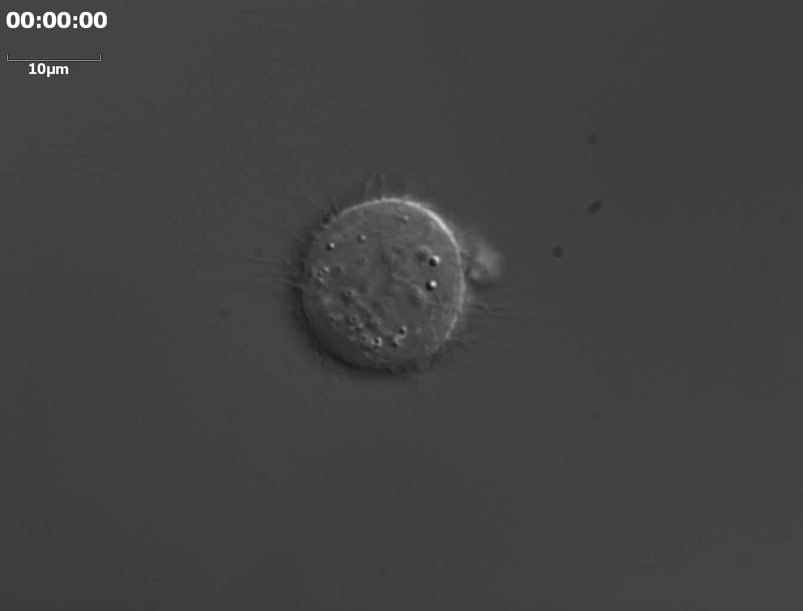

Trước khi xem, em nghĩ điều gì sẽ xảy ra?
Chưa có đáp án đúng hay sai ở bước này. Hãy ghi lại suy nghĩ ban đầu để sau khi quan sát, em có thể kiểm chứng và điều chỉnh dự đoán của mình.

Một tế bào được ghi hình liên tục qua kính hiển vi.Nếu tiếp tục quan sát tế bào này trong một khoảng thời gian, em dự đoán điều gì sẽ xảy ra? Và những tế bào mới hình thành sẽ tiếp tục như thế nào?
Hãy nghĩ về số lượng tế bào, hình dạng của tế bào trong quá trình biến đổi và điều có thể xảy ra với những tế bào mới hình thành.
Đối chiếu video thực tế với mô hình
Chọn một mốc quan sát ở mô hình bên phải. Video bên trái sẽ nhảy đến đoạn tương ứng, phát và tự dừng ở cuối đoạn để em có thời gian quan sát.
01 · VIDEO KÍNH HIỂN VI THỰC TẾ
Ghi hình time-lapse một tế bào đang phân chia
02 · MÔ HÌNH TẾ BÀO TƯƠNG TÁC
Chọn giai đoạn để điều khiển video và mô hình cùng lúc
Ở thời điểm đầu, video cho thấy một tế bào. Hãy quan sát hình dạng tế bào khi chuyển đến các đoạn tiếp theo.
Mô hình bên phải là sơ đồ hóa, không phải ảnh chụp tế bào. Khi video chạy, trạng thái mô hình thay đổi theo thời gian phát của video.
Đoạn video được chọn thể hiện rõ quá trình phân chia hơn là toàn bộ giai đoạn tế bào con lớn lên. Vì vậy, chế độ này dùng mô hình để khám phá sự tăng kích thước; video được tạm dừng, không ghép một cảnh không tương ứng.
Ghi nhận bằng chứng từ video
Đánh dấu những dấu hiệu em thực sự quan sát được trong các đoạn video. Chọn tất cả phương án phù hợp.
Nếu các tế bào con tiếp tục phân chia thì sao?
Điều chỉnh số chu kì. Quan sát số lượng tế bào thay đổi sau mỗi chu kì.
Em có muốn điều chỉnh dự đoán ban đầu không?
Quay lại các câu trả lời trước khi xem. Dựa vào video, mô hình và bằng chứng vừa ghi nhận, hãy chọn lại phương án mà em cho là hợp lý nhất.
Dự đoán ban đầu của em
Bằng chứng em đã ghi nhận
Chưa có dữ liệu.
Kết quả đối chiếu dự đoán
Tự rà soát phần giải thích
Đọc lại câu trả lời của mình và đánh dấu những ý em đã trình bày được. Đây là bảng tự đối chiếu, không thay thế việc giáo viên nhận xét câu trả lời tự luận.
Em đã hiểu mối quan hệ giữa lớn lên và phân chia chưa?
Trả lời độc lập năm câu hỏi. Hệ thống chỉ hiển thị đáp án và giải thích sau khi em nộp bài, vì vậy hãy hoàn thành tất cả câu hỏi trước khi xem kết quả.